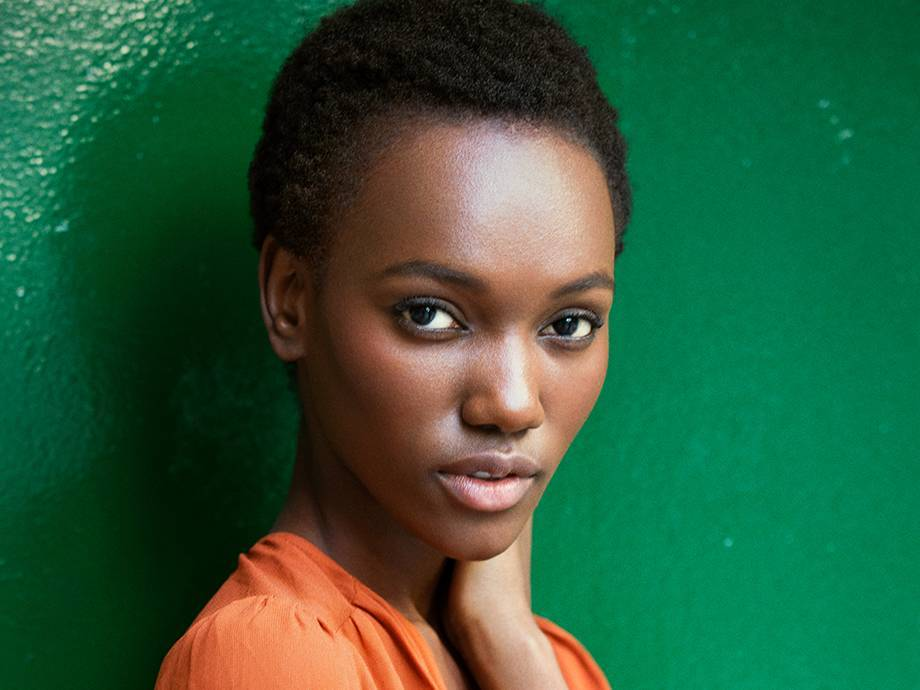
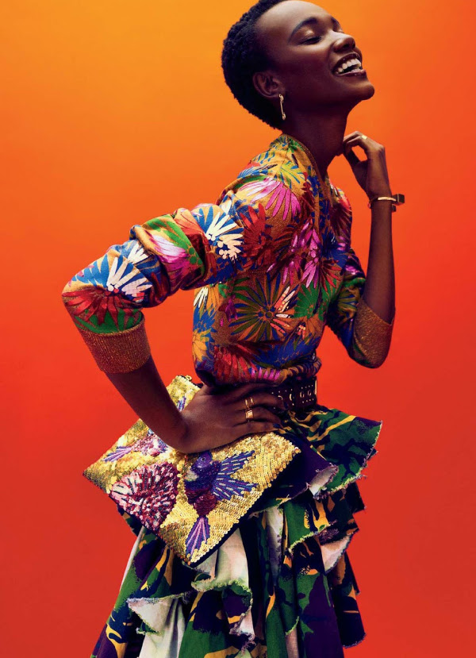

A beleza negra de Herieth Paul como o novo rosto da Maybelline
Desde o agenciamento pela Women Management que este novo rosto incendiou o mundo da moda. A beleza única, as maçãs do rosto proeminentes e a impressionante presença na passarela fazem de Herieth Paul uma das mais procuradas recém-chegadas ao meio. Até hoje, já apareceu em praticamente todas as grandes revistas de moda mundiais e continua a ser muito procurada pelos melhores estilistas, editores e fotógrafos do meio.
Portifólio
Editoriais
Revistas
Coleções
Desfiles
New York Fashion Week
Victoria's Secret Fashion Show
Campanhas
Maybelline
Lacoste
Calvin Klein
Sobre Herieth Paul
Oriunda de Dar es Salaam — a maior cidade da Tanzânia — Paul imigrou para o Canadá aos 14 anos.
Noutros tempos sonhou em ser diplomata, como a sua mãe. No entanto, tudo mudou depois de ter sido
descoberta durante um concurso de modelos. Foi a cara de campanhas como a de Tom Ford e da Rodarte.
Ela desfilou nas passarelas de Proenza Schouler, Burberry, Ralph Lauren e da Balmain. Já posou para
o Patrick DeMarchelier, o Steven Meisel e para o David Sims. Defende a educação dos jovens adultos,
e oferece bolsas e mentorias a adolescentes na sua terra natal. E agora, estamos super entusiasmados
por anunciar que a Herieth Paul se juntou à família da Maybelline — tornando-se uma das nossas novas
modelos e porta-voz.
A mãe de Paul, Nsia Paul é diplomata no Alto Comissariado da Tanzânia em Ottawa.Ela tem uma irmã chamada
Happiness Floyd.Desde o final de 2018, ela mantém um relacionamento com a modelo do Sudão do Sul, Monywiir
Deng Dharjang, que em maio de 2020 anunciou que estava esperando um filho, no qual em 10 de fevereiro de 2021,
Paul e Dharjang em sua conta do Instagram de o primeiro, eles deram as boas-vindas ao filho Riael.
"Fico confiante por não saber tudo, mas por saber que consigo aguentar o que ainda estiver para vir."
 Contato
Agência Fashion
Telefone: 55432978
Av.Rebouças, 2499 - Pinheiros